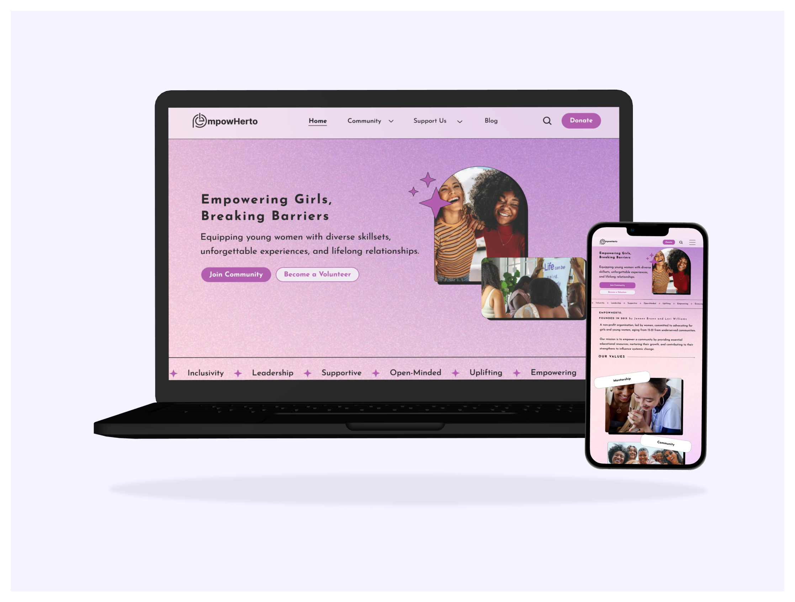
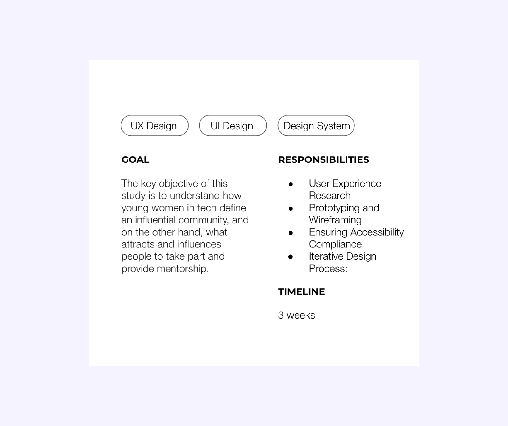
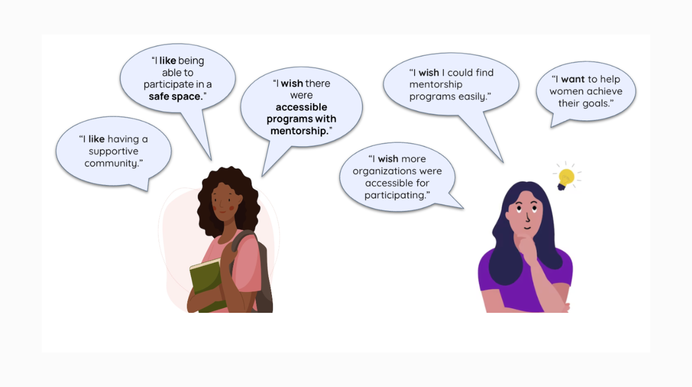

What are our users telling us? .
Users have highlighted time constraints as a barrier to participation, alongside challenges with accessibility and the presence of intolerance within organizations.

UX Research Plan.
The key objective of this study is understand how young women in tech define an influential community, and on the other hand, what attracts and influences people to take part and provide mentorship.
Research Primary Questions:
* What are some criteria they use when choosing mentorship programs?
* What aspects appeal most?
* What influences you most to be a part of a program?

User Persona.
Users have highlighted time constraints as a barrier to participation, alongside challenges with accessibility and the presence of intolerance within organizations.

Interview Insights .
Our interviews provided us with insight into what mentors and mentees value. Mentees showed an affinity and desire for supportive and capable leadership and safe and accessible spaces and opportunities.

Problem Statement
We believe providing a safe, trustworthy, and knowledgeable community for young females will achieve a level of comfortability and confidence necessary for them to succeed and accomplish their goals.
Key Takeaways

The first navigation was iterated, we started out with about, community, support us and blog.
Programs is included within community while become a volunteer was in support us.
Added individual program screens to identify curriculum and to sign-up
We decided to merge home and about together so users can just land onto the mission of the org
Careers Page layout was changed to vertical, tags were included to identify
Key Takeaways

Carefully analyzed how users move through our platform. Identified areas where users might encounter difficulties or confusion. Made adjustments to streamline the user journey, making it more intuitive and accessible. Overall, these improvements aim to enhance user satisfaction and engagement with our platform.
Considerations:

Do people navigate the website the way that they do?
What are they trying to do?
Identify pain points using navigation.
Prototype.
Users have highlighted time constraints as a barrier to participation, alongside challenges with accessibility and the presence of intolerance within organizations.